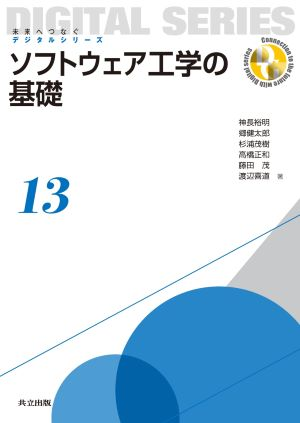

教員紹介
藤田 茂（ふじた しげる）

経歴
1988年4月：千葉工業大学 工学部 情報工学科入学
1997年3月：千葉工業大学大学院 博士課程 単位満了退学
1997年4月：千葉工業大学 工学部 情報工学科 助手
1998年3月：博士取得
2012年4月：千葉工業大学 情報科学部 情報工学科 教授
2024年4月：千葉工業大学 情報変革科学部 認知情報科学科
千葉工業大学 情報システム委員会委員長
専門分野
1.知能情報学
2.ソフトウェア
3.計算機システム
4.知覚情報処理
5.感性情報学
6.認知科学
受賞歴
書籍
ソフトウェア工学の基礎
